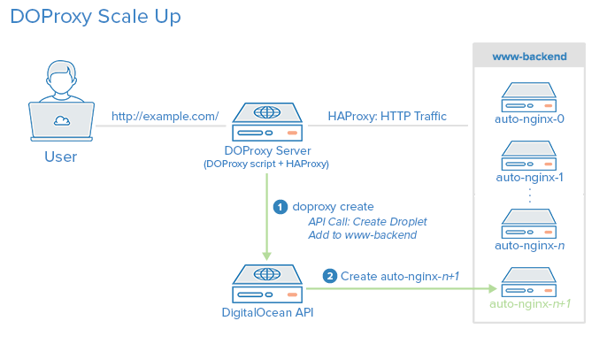
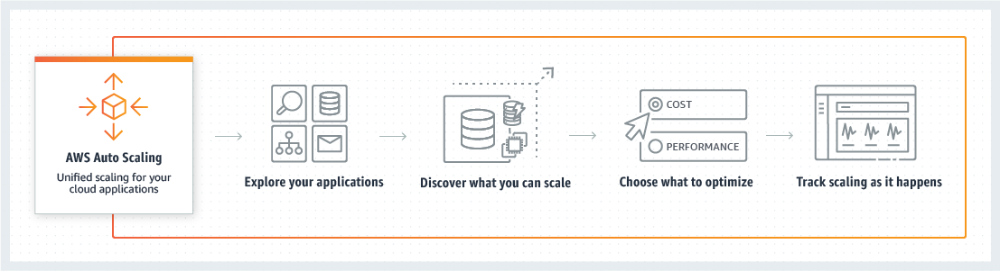

CIS 527
Lab 5 - Scaling & High Availability

Image Source: Nati Shalom on Stack Overflow
Scaling
- Horizontal - Add More Droplets & Load Balancer
- Vertical - Resize Droplet; Requires Downtime or Existing Infrastructure
Horizontal Scaling
Image Source: DigitalOcean
AWS Auto Scaling
Image Source: Amazon Web Services
High Availability

Image Source: DigitalOcean
Case Study
Image Source: Netflix
Image Source: Netflix
Image Source: Netflix Tech Blog
Image Source: Netflix Tech Blog
Image Source: Netflix Tech Blog
Image Source: High Scalability
Image Source: Brooks Canavesi

Image Source: Netflix Tech Blog
Cloud Design Considerations
- Scale Up or Scale Out?
- Build Capacity Predictively or Reactively?
- Design for High Availability?
- Plan for Failures and Outages
- Test Failover Procedures